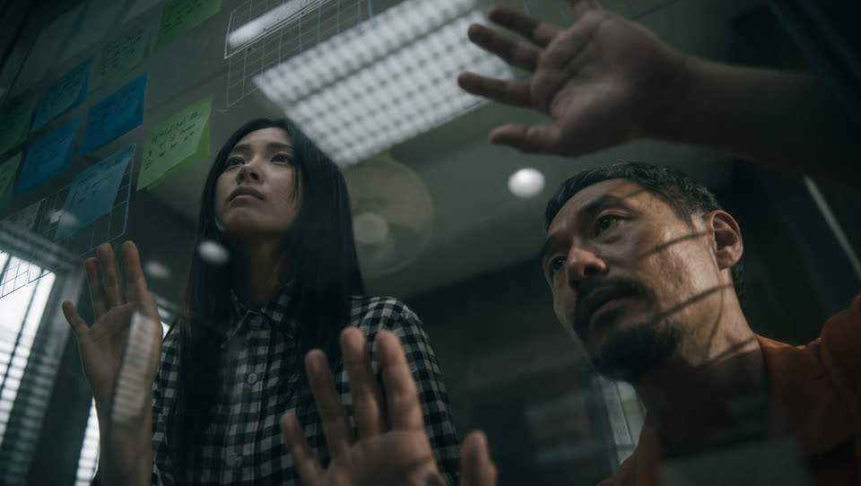

Two investigators pressing hands to a sticky-note glass wall, shot from below: low-key film-still with film grain (official Kling Image 4.0 example)
GRN-094Grain / FilterKling Image 4.0by Kling AI (official)2026-11-18

An official Kling Image 4.0 film-still example: the texture words come first ("realistic, cinematic aesthetic with film grain, live-action photography, commercial photography, and film-still styling"), then an extreme low wide-angle view up through a transparent glass panel covered in sticky notes, hands pressed to the glass in the foreground, a soft round ceiling light and fan in the blur. Low-key, low-contrast cool overhead light. Useful as a crime-drama start frame.
Prompt
A young East Asian woman and a middle-aged man stand in front of a transparent glass panel. The image features a realistic, cinematic aesthetic with film grain, live-action photography, commercial photography, and film-still styling. A wide-angle lens captures the scene from an extremely low angle, looking upward, while a large aperture creates a shallow depth of field and frames both subjects in a close shot. On the left, the young East Asian woman has a natural skin tone and long, straight black hair. She wears a black-and-white checkerboard-patterned long-sleeved shirt with the collar buttoned up. Her face and gaze are directed toward the upper left of the frame, and her expression is calm. Both hands are raised as if she is interacting with the transparent glass panel in front of her. On the right, the middle-aged man has a natural skin tone, short hair, and a black beard connecting to his sideburns. His right ear is visible, and he wears light-colored clothing. His face and gaze are also directed toward the upper left, with a focused expression. The scene takes place indoors during the daytime. The transparent glass panel occupies the lower and left portions of the foreground, with blue and green sticky notes attached to it, bearing handwritten black markings. In the middle ground, the woman's hand is positioned in the lower left, while the man's hand is in the upper right; both are pressed against the glass panel. A white, grid-like object resembling a calendar or planner floats above the glass panel in the upper-left area of the frame. In the blurred background, a round white ceiling light is centered on the indoor ceiling, emitting a soft glow, with the faint outline of a fan also visible. The overall image uses dark, low-key lighting with low contrast. Cool-toned artificial overhead lighting falls softly across the scene. The figures and keyboard are arranged diagonally, creating a balanced composition that enhances spatial depth and visual tension.
Our Seedance 2.5 adaptation
[ADAPTED for Seedance 2.5 by Grok Bot; not the creator's prompt. Follows the official BytePlus Seedance 2.5 prompt guide and its official sd25-pe prompt-optimizer skill: parameters only on the API line (not in the prompt body), subject + action + scene, then visuals, camera (move, subject, start, direction, arrival) and sound; only the source's own exclusions are kept.] API: duration 5, ratio 16:9 (taken from the first frame), resolution 1080p (4k for a final), generate_audio true; first_frame = the GRN-094 still. 【Subject】The young East Asian woman in the black-and-white checkered shirt and the bearded middle-aged man, exactly as in the first frame, hands pressed to the transparent glass panel. 【Action】The woman slides one blue sticky note across the glass toward the man's hand; he follows it with his eyes, then looks up at her; neither speaks. 【Scene】The low-ceilinged office with the round ceiling light and fan behind them, sticky notes with handwritten marks on the glass, unchanged. 【Camera】Extreme low wide-angle view looking up through the glass; very slow push-in, shallow depth of field. 【Visuals】Dark low-key, low-contrast cool overhead light, film-still look with visible film grain; no added flares. 【Sound】Fingertips squeaking on glass, a ceiling fan hum, a distant office printer.
Tags: Kling Image 4.0, official example, film grain, film still, low angle through glass, wide-angle, low-key low-contrast, crime drama, image